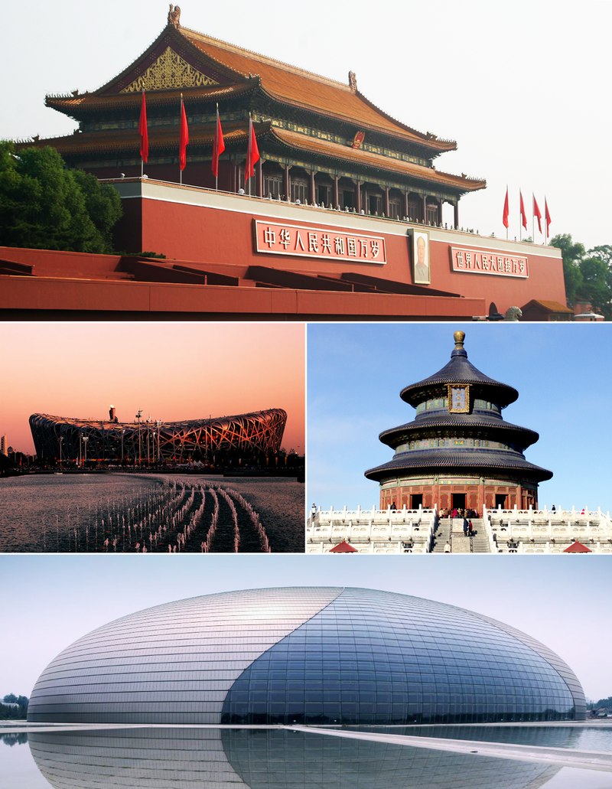
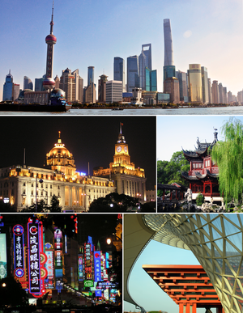
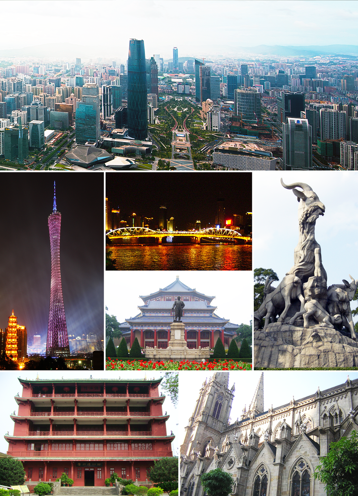

北京
上海
广州
北京市，简称“京”，是中华人民共和国首都、
直辖市和京津冀城市群的中心，中国的政治、文化、交通、
科技创新和国际交往中心，中国经济、金融的决策和管理中心。
北京是世界上最大的城市之一，具有重要的国际影响力，
人类发展指数位居中国省级行政区第一位。
上海，简称沪，别称申，中华人民共和国直辖市、
国家中心城市之一，也是中国按行政区划主城区内人口排名的最大的城市。
上海市最重要的产业为商贸流通、金融、信息、制造等。上海是中国的铁路与航空枢纽，
其港口为世界最大的集装箱港。
广州市，简称穗，现有别称五羊仙城、羊城、穗城、穗垣、仙城
、花城，为中华人民共和国的超大城市、五大国家中心城市之一，广东省省会，副省级城市，
也是华南地区的经济、文化、科技和教育中心，交通枢纽，中国南方最大、历史最悠久的对外通商口岸，
世界最著名的港口城市之一，中国历史文化名城。


